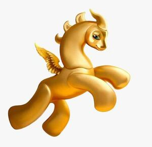

Trade Mark Journal No.2025/028 11 July 2025
WO0000001861490 (3,9,16,18,24,25,28,29,30,41)
Office of origin: European Union Intellectual Property Office (EUIPO)
Date of International Registration:21 November 2024
Date of designation in the UK:
21 November 2024

The mark contains the colours gold and light blue.
Gold: dinosaur; light blue: eye.
International priority date claimed: 22 May 2024
(European Union Intellectual Property Office (EUIPO))
(019030799)
- Class 3
- Cosmetics; perfumes; facial and body oils; perfume oils; lotions [cosmetic]; perfumed wipes; pre-moistened wipes; baby wipes; face cleaning wipes; moisturizers; cosmetic creams; body creams; face creams; sun creams; sun-tanning gels; baby creams [non-medicated]; sanitary preparations being toiletries; body milk; soap; bath foam; talcum powder for the body; dentifrices; shampoos; conditioners; hair creams and gel; cosmetic pomades and balms for lips.
- Class 9
- E-books; downloadable e-books; downloadable comics; audiobooks; electronic publications containing games; downloadable computer games; virtual reality game software; podcasts; downloadable podcasts; downloadable virtual products, namely, virtual reality games software, virtual courses, virtual books, virtual bookshops, virtual figurines, virtual clothing products, virtual childcare products and virtual personal care and hygiene products, virtual foodstuffs, virtual beverage, virtual teaching and education products; computer programs to be used online and in online virtual worlds containing virtual games, virtual courses, virtual books, virtual book cases, virtual figures, virtual clothing products, virtual childcare products and virtual personal care and hygiene products, virtual foodstuffs, virtual beverage, virtual teaching and education materials; virtual reality software for education; downloadable software for online use of games; downloadable video game software; software for games; downloadable electronic game programs; pre-recorded CDs and DVDs containing games; pre-recorded videos containing games; pre-recorded audio tapes containing games; downloadable audiovisual media contents in the entertainment sector; downloadable cartoons; animated cartoons in the form of cinematographic films; downloadable digital files authenticated by non-fungible tokens (NFTs); teaching and instructional apparatus; decorative magnets [magnets].
- Class 16
- Books; pocket books; coloring books; bookmarks; sticker albums; children's albums; souvenir albums [photo album]; comics; collectible trading cards; stationery; pens; colors pencils; watercolors; painters' brushes; stationery cases; folders [stationery]; printed matter; periodicals; posters; calendars; notepads; papier-mâché sculptures and figurines; greeting cards; paper decorations for parties; tablemats of paper; table place setting mats of card; dinner mats of cardboard; napkins; handkerchiefs; paper bibs; instruction or teaching materials (except apparatus).
- Class 18
- Rucksacks; school knapsacks; school bags; school book bags; bags; handbags; canvas bags; diaper bags; suitcases; cases, namely empty make-up cases, key cases and leather cases for other personal items; leather cases; purses; wallets; coin purses; umbrellas and parasols; children's umbrellas.
- Class 24
- Swaddling clothes; children's and infants' blankets; infants' bed linen; children's towels.
- Class 25
- Articles of clothing; tee-shirts; jerseys [clothing]; sweaters; sweatshirts; trousers; combinations; children's and infant clothing; children's sportswear; snap crotch shirts for infants and toddlers; rompers for infants and toddlers; layettes for babies; pyjamas; underwear for babies and children; babies' and children pants [underwear]; nappy pants; swimwear for babies and children; bibs for babies and children [not of paper]; aprons [clothing]; footwear; shoes for children and babies; footwear for babies; socks for babies and children; headgear; hats for children and babies; headbands [clothing].
- Class 28
- Games; sports games; educational games; musical games; parlour games; playing cards; electronic games; electronic toys; game consoles; dice [games]; toys; appliances for gymnastics and sports; toy figures; puzzles; toys in the form of puzzles; plush toys; toys incorporating money boxes; party balloons.
- Class 29
- Processed fruit and vegetables; fruit leathers; fruits, dried; fruit salads; snack mixes consisting of dehydrated fruit and processed nuts; fruit-based snack food; fruit leathers; fruit-based snack food; pulse-based snack food; cheese sticks; fish sticks and croquettes; potato sticks; potato chips; bottled meat; tuna, tinned; cheese; meat burger patties; frankfurter sausages; vegetables chips; milk; soya milk; oat milk; beverages consisting primarily of milk; dairy-based beverages; beverages consisting primarily of creamers; yogurt; butter; peanut butter; cocoa butter for food; marmalade; jams; fruit dessert; chilled dairy desserts; milk shakes; cream [dairy products].
- Class 30
- Pastry mixes and yeast; bread; cereals, processed and goods made therefrom; cereal-based snack food; bakery products; pizzas and preparations for pizzas; sandwiches; popcorn and cereal-based snacks; mustard; sauces [condiments]; flavorings and seasonings; preparations for cakes; pastries; savory pastries; cakes; tarts; biscuits; buns; shortbread biscuits; plum cakes; wafers; pancakes; bagels; muffins; puddings; confectionery; cocoa; chocolate and chocolate products; hot chocolate; ice cream; sorbets and sherbets; honey; tea.
- Class 41
- Providing online electronic publications; entertainment services, namely providing online, non-downloadable virtual goods or use in video games featuring virtual games, courses, books, bookcases, figurines, clothing products, childcare products and personal care and hygiene products, virtual foodstuffs, virtual beverages, teaching and education products; providing entertainment in the nature of games and puzzles via a website; educational services; training activities; sports and cultural activities; providing animated cartoons by means of electronic communications networks, computer networks and wireless communication networks; providing online video games and computer games available online; theatrical performances both animated and live action; providing information on entertainment, education and cultural events; providing games; book and audiobook publishing services; providing non-downloadable publications in the form of books; amusement park services; providing of training courses, webinars and seminars; art exhibition services; audio, video and multimedia production and creation, and photography; production and rental of educational materials; publication of the editorial content of sites accessible via a global computer network; arranging and conducting of educational discussion groups, not on-line; all the mentioned services to be provided in the real and virtual world.
PAOLA VISCONTI
ANTONIO SIGNORINI
Representative: Giacomo Pizzolon, Via Pigna 8, I-37121 Verona, ITALY